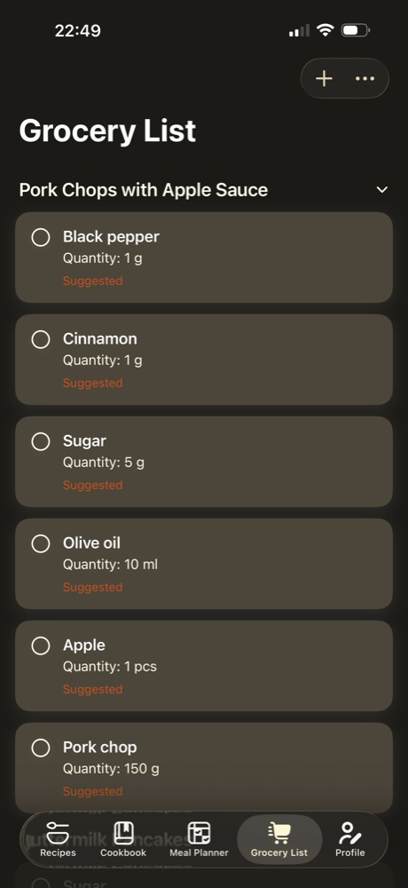

ReciPics
ReciPics
Gespeicherte Rezepte hast du genug, und trotzdem stellt sich jeden Abend die Frage, was es heute gibt. In ReciPics legst du Rezepte aus deinem Kochbuch auf einen Wochenplan, Mahlzeit für Mahlzeit, und setzt die Zutaten auf deine Einkaufsliste, wenn du einkaufen gehst.
Im App Store ansehen


Echte Screens aus der App. Das Rezept zeigt die deutsche App-Version (Beispielrezept von unserer eigenen Seite recipics.app); Essensplaner und Einkaufsliste stammen aus der englischen App-Version, die App gibt es auch auf Deutsch.
Im Tab „Essensplaner“ siehst du eine Woche als Raster: die Tage nebeneinander, die Mahlzeiten untereinander. Mit den Pfeilen wechselst du die Woche, und ein Tipp auf ein leeres Feld plant diese Mahlzeit.
Frühstück, Mittagessen und Abendessen sind schon angelegt. Unter „Mahlzeitenarten verwalten“ fügst du eigene hinzu, zum Beispiel einen Snack, benennst sie um oder änderst die Reihenfolge, insgesamt bis zu fünf Zeilen.
Zutaten kommen nur von geplanten Rezepten, nicht von manuellen Einträgen. Jede geplante Mahlzeit bringt ihre eigenen Zutaten mit, mit den Mengen aus ihrem Rezept. Gleiche Zutaten werden nicht zusammengefasst: Brauchen zwei geplante Gerichte Zwiebeln, stehen die Zwiebeln zweimal auf der Liste. Ein Gericht, das sich wiederholt, bringt seine Zutaten so oft mit, wie es in der Woche geplant ist.
Wenn du später noch einmal synchronisierst, kommen nur Zutaten dazu, die noch nicht übernommen wurden. Auf der Liste hakst du ab, was du hast, und teilst sie als Text oder PDF. Mehr zur Einkaufsliste aus deinen Rezepten.
Wähl im Menü (···) des Essensplaners „Teilen“ und dann „Als PDF teilen“ oder „Drucken“. Das PDF listet jeden Tag der angezeigten Woche, an dem etwas geplant ist, mit den Mahlzeiten der Reihe nach und deinen Notizen.
KI kann sich irren. Vergleich ein importiertes Rezept vor dem Kochen mit dem Original, vor allem Mengen und Temperaturen, und prüfe Zutaten bei Allergien oder Unverträglichkeiten selbst.
Ja. Essensplaner und Einkaufsliste funktionieren ohne Verbindung. Für den Import von Rezepten und KI-Vorschläge brauchst du eine Internetverbindung.
Dein Plan liegt auf deinem iPhone. Es gibt kein Konto und keinen Abgleich zwischen Geräten, also auch keinen gemeinsamen Plan, den andere bearbeiten können. Zum Teilen schickst du den Plan als PDF.
Ja. Mit den Pfeilen wechselst du zu jeder beliebigen Woche. Wiederholte Gerichte werden bis zu vier Wochen im Voraus eingetragen oder bis zu dem Enddatum, das du festlegst.
Nein. Jede geplante Mahlzeit bringt ihre eigenen Zutaten mit den Mengen aus ihrem Rezept mit, deshalb kann dieselbe Zutat mehrmals auftauchen. Schau die Liste vor dem Einkaufen kurz durch.
Ja. ReciPics ist eine iPhone-App ab iOS 26. Eine Android- oder Web-Version gibt es nicht.
Foto-Scans zählen zum KI-Kontingent der App, das ohne Premium begrenzt ist. Für neue Nutzer ohne bezahltes Paket ist die Zahl der Link-Importe pro Monat begrenzt. Die App zeigt dir, wie viele noch übrig sind.
Rezepte aus Kochbüchern und von Websites sind in der Regel urheberrechtlich geschützt. Nutze ReciPics nur für dein privates Kochbuch und gib importierte Rezepte, die du nicht weitergeben darfst, nicht weiter und veröffentliche sie nicht. Um ein Rezept zu lesen, werden das Foto und der auf deinem iPhone erkannte Text oder der Link an unsere Server und Dienstleister gesendet, darunter unser KI-Anbieter OpenAI (USA); siehe Datenschutz. Der Inhalt deines Essensplans bleibt auf deinem iPhone und wird nicht an unsere Server gesendet.
ReciPics im App Store ladenFür iPhone mit iOS 26 oder neuer.